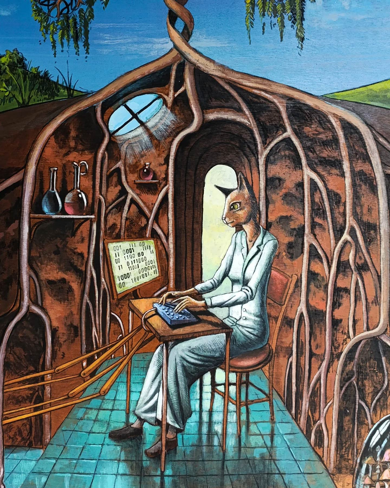

Investigadora en Ciencias Médicas
Medical Sciences Researcher
Instituto Nacional de Enfermedades Respiratorias (INER)
Dirijo el Laboratorio de Biología Computacional en el INER, donde usamos bioinformática y biología de sistemas para entender las enfermedades respiratorias, particularmente la fibrosis pulmonar idiopática. Combinamos análisis de expresión génica, redes regulatorias y ciencia de datos para avanzar en la medicina traslacional.
I lead the Computational Biology Laboratory at INER, where we use bioinformatics and systems biology to understand respiratory diseases, particularly idiopathic pulmonary fibrosis. We combine gene expression analysis, regulatory networks, and data science to advance translational medicine.
Análisis transcriptómico de fibroblastos pulmonares bajo hipoxia y normoxia. Identificación de genes y redes regulatorias implicadas en la progresión de la IPF, incluyendo lncRNAs, miRNAs y factores de transcripción.
Transcriptomic analysis of lung fibroblasts under hypoxia and normoxia. Identification of genes and regulatory networks involved in IPF progression, including lncRNAs, miRNAs, and transcription factors.
Modelado de redes de regulación génica en contextos de enfermedad. Desde redes transcripcionales en bacterias (RegulonDB) hasta redes inmunológicas en COVID-19 y atractores cíclicos en diferenciación de macrófagos.
Modeling gene regulatory networks in disease contexts. From transcriptional networks in bacteria (RegulonDB) to immunological networks in COVID-19 and cyclic attractors in macrophage differentiation.
Desarrollo de herramientas computacionales para enfermedades respiratorias, incluyendo PulmonDB (base de datos de expresión génica pulmonar) y pipelines de análisis para microarreglos, RNA-seq y metilación.
Development of computational tools for respiratory diseases, including PulmonDB (lung gene expression database) and analysis pipelines for microarrays, RNA-seq, and methylation.
Respuesta inmunológica y transcriptómica frente a COVID-19 e influenza. Identificación de regulones, factores clínicos diferenciales y redes de células T CD4+ en enfermedad severa.
Immunological and transcriptomic response to COVID-19 and influenza. Identification of regulons, differential clinical factors, and CD4+ T cell networks in severe disease.
23 artículos en revistas indexadas y capítulos de libro. 23 articles in indexed journals and book chapters. Google Scholar →
Big Data and Cognitive Computing
Identification of regulons modulating the transcriptional response to SARS-CoV-2 infection in humans
Frontiers in RNA Research
Review of gene expression using microarray and RNA-seq
Rigor and Reproducibility in Genetics and Genomics (Book chapter)
Current Issues in Molecular Biology
TIP Revista Especializada en Ciencias Químico-Biológicas
An Epistatic Network Describes oppA and glgB as Relevant Genes for Mycobacterium tuberculosis
Frontiers in Molecular Biosciences
Cyclic Attractors Are Critical for Macrophage Differentiation, Heterogeneity, and Plasticity
Frontiers in Molecular Biosciences
Clinical and Immunological Factors That Distinguish COVID-19 From Pandemic Influenza A(H1N1)
Frontiers in Immunology
Instituto Nacional de Enfermedades Respiratorias Ismael Cosío Villegas
Calzada de Tlalpan 4502, CDMX, México
National Institute of Respiratory Diseases Ismael Cosío Villegas
Calzada de Tlalpan 4502, Mexico City, Mexico
Ph.D. en Ciencias Genómicas in Genomic Sciences
UNAM — Centro de Ciencias Genómicas, 2007–2014
Licenciatura en Biología B.S. in Biology
Universidad Veracruzana, 2002–2006